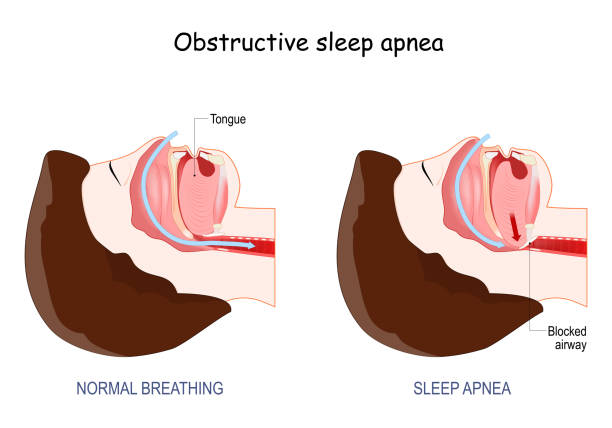

Obstructive Sleep Apnoea
Our lead surgeon has performed drug-induced sleep endoscopy (DISE) since 2011 and multilevel sleep apnoea surgery since 2018. Experience
What causes obstructive sleep apnoea?
During deep sleep, the muscles that keep the upper airway open relax. The airway narrows, and with each breath it is sucked further inwards. Breathing effort continues, but air cannot pass freely.
Symptoms
- Loud, irregular snoring with pauses in the pattern
- Daytime sleepiness and tiredness
- Poor memory, irritability and reduced interest in sex
Tests for sleep apnoea
- Sleep study: shows the type and severity of sleep apnoea
- Sleep endoscopy (DISE): identifies the areas causing obstruction
- Dynamic MRI: useful in selected patients
Can sleep apnoea be cured?
CPAP, BiPAP and oral devices control sleep apnoea very effectively while they are used, but they do not cure it. Weight reduction and surgery can cure it in selected patients.
Treatment options
- Lifestyle changes
- Medicines for nasal blockage and acid reflux
- Custom-made mandibular advancement devices
- Myofunctional therapy (exercises for the mouth, tongue and throat muscles), through a dentist we refer you to
- Surgery to relieve the obstruction:
- Correcting fixed blockages, such as nasal blockage and enlarged adenoids and tonsils
- Palate surgery: usually barbed palatopharyngoplasty, which repositions the palate with dissolving stitches, or lateral expansion pharyngoplasty, chosen according to how your airway collapses on sleep endoscopy; other techniques, such as Z-palatoplasty, in selected cases
- Tongue base: lingual tonsil removal, or coblation reduction of the tongue base
- Epiglottis: epiglottopexy, which moves the epiglottis forward, or supraglottoplasty
- Maxillomandibular advancement (MMA)
- Bariatric surgery for some patients with a BMI over 40
- In children, adenoidectomy and tonsil surgery
Questions patients ask
Common questions from the clinic, with answers written by Dr Rejith R S.
I only snore. Why do I need a sleep test?
Snoring alone can be harmless. But loud snoring with daytime sleepiness, pauses in breathing noticed by your family, or high blood pressure may mean sleep apnoea. A sleep study is the only way to know how severe it is, and the right treatment depends on that.
Is the sleep study done at home or in hospital?
Both are possible. A home sleep study is convenient and suits many adults. A full study in hospital gives more detail and is better for some patients. We'll suggest which suits you.
Will surgery cure my sleep apnoea?
It can in selected patients, especially when there is a clear blockage such as large tonsils or a blocked nose. For many adults, CPAP works best. Before airway surgery we often do sleep endoscopy (DISE) to see exactly where your airway closes, so the operation is planned for your airway.
I tried CPAP and couldn't tolerate it. What now?
That's common, and often fixable. The mask fit, the pressure setting or a blocked nose is frequently the problem. If CPAP still doesn't work for you, an oral device or surgery planned with sleep endoscopy may help.
Does losing weight help?
Yes. Weight loss reduces sleep apnoea for most people, and sometimes removes it. For moderate or severe sleep apnoea, it works best alongside other treatment rather than as the only plan.
Ask your AI assistant
Many patients like to read more before their visit. You can copy this question into ChatGPT, Gemini, Claude or any AI assistant, and change the details to match your own situation.
I am a 45-year-old man. I snore loudly, my wife says I sometimes stop breathing at night, and I feel sleepy during the day. In simple language, please explain what obstructive sleep apnoea is, what can happen if it is not treated, how it is tested, and what treatments are available. Also list 5 questions I should ask my ENT doctor.
AI assistants can give wrong or outdated answers, and they can't examine you. Use the answer to understand your condition, not to diagnose or treat yourself. Bring your questions to the clinic and we'll go through them with you.
Read more about snoring in children and adults.
Book a consultation
Call 81390 05150 or message on WhatsApp. See clinics and timings.